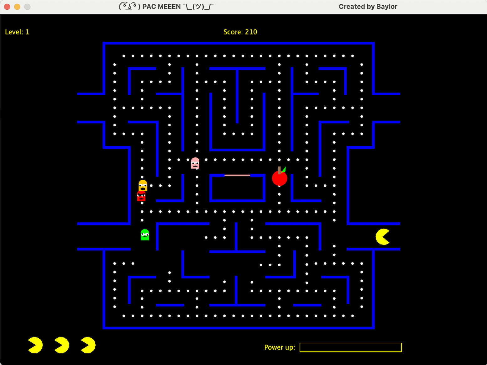

Java-based Pacman
I developed a state-based Java Pacman game from scratch. I included variations to enhance the game such as a
2-player mode and free movement, enabling players to traverse in any direction at any location on the map.

Since I freehanded everything, the most time-consuming part of the project was creating the GUI. The map took the longest as I had to run the code after each wall to check how it aligned. Additionally, the players posed complexity, especially considering their animation and the fact that they undergo changes when a power-up is collected. Here is a snippet demonstrating how I coded this:
public void render(Graphics g) {
if(getId() == ID.Player) {
pColor = p1Color;
}
else if(getId() == ID.Player2) {
pColor = p2Color;
}
if(timerA <= 0) {
//base shape of pacman
g.setColor(pColor);
g.fillOval((int)x, (int)y, 32, 32);
timerA = 80;
}
else if(timerA >= 45){
g.setColor(pColor);
g.fillOval((int)x, (int)y, 32, 32);
timerA--;
}
else{ //creating an effect looking like the mouth is opening and closing
g.setColor(pColor);
g.fillOval((int)x, (int)y, 32, 32);
if(getVelX() == 2) { //moving right
g.setColor(Color.black);
Polygon triangle = new Polygon();
triangle.addPoint((int)x+13, (int)y+16); //left
triangle.addPoint((int)x+32, (int)y); //top right
triangle.addPoint((int)x+32, (int)y+32); //bottom right
g.fillPolygon(triangle);
}

The most intricate aspect of my project involved the creation of 3 of my own distinct tracking algorithms for the ghosts. In essence, the ghost's direction is calculated based on its relative position to the player by adjusting probability values. This algorithm introduced dynamic and responsive behavior. Here is a snippet of the beginning of Blinky's tracking algorithm:
//tracking algorithm for the rest of the game
else {
inLines();
if((velX==0 && velY==0) || (coolDownTimerCheck() && turnOpen()==true)) {
for(int k = 0; k < handler.object.size(); k++) {
GameObject tempObject = handler.object.get(k);
if(tempObject.getId() == ID.Player){ //tempObject is player
a = tempObject.getX()-x; //difference between the players's x position and Blinky's
b = tempObject.getY()-y; //difference between the players's y position and Blinky's
if(Math.abs(a) > Math.abs(b)) {
//Blinky is farther from the player with respect to x (x distance greater than y distance)
if(a>0) { //player is to the right of Blinky
if(b>0) { //player is below Pinky
int number = r.nextInt(12)+1; //decides Blinky's direction
if(number<=6){ //Blinky is most likely to travel right
velX=1;
}
else if(number==7) {
velX=-1;
}
else if(number<=11) { //Blinky is likely to travel down
velY=1;
}
else if(number==12) {
velY=-1;
}
}